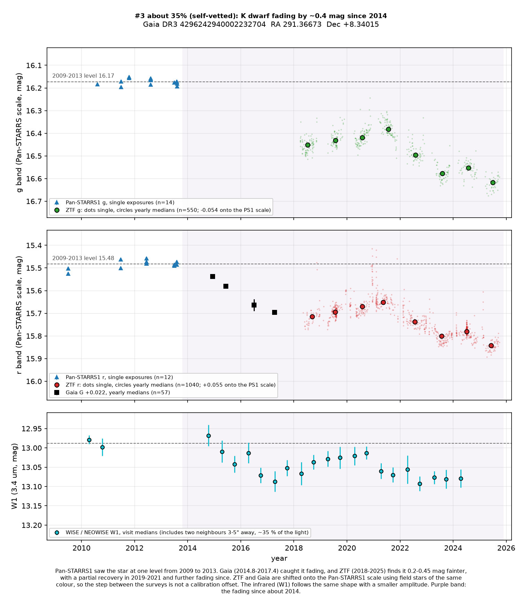
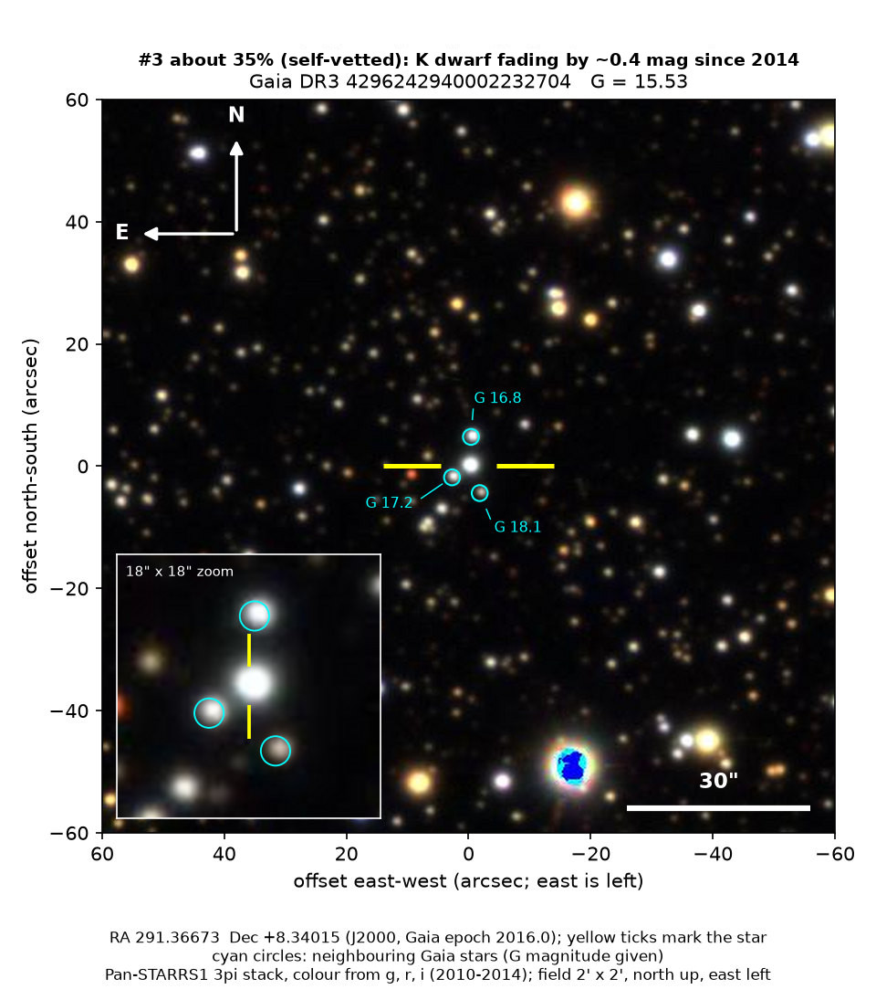

Professor of Mathematics
Paata Ivanisvili
Department of Mathematics, University of California, Irvine

Candidate 3: an orange dwarf in Aquila that has been fading for a decade
Why this probability. The fade is certainly real: Gaia, the Dark Energy Camera, ZTF and WISE all saw it, and field stars of the same colour did not. The steady level before it is known only for 2009 to 2013, the fade paused and partly reversed in 2019 to 2021, and there is no spectrum. The search lowered this from about 40% after similar spotted dwarfs, including two with no measured rotation, were found to drift by about as much, so the star’s quietness is a less distinctive argument for dust than it first seemed.
How to read the pictures. The finder chart is a patch of sky two arcminutes across, about a fifteenth of the Moon’s width, with north up and east to the left. The star sits between the two yellow ticks, and the white bar is 30 arcseconds. On a light curve the vertical axis is magnitude. A larger magnitude means a fainter star, so the axis runs downwards: down means fainter. On this light curve, purple shading marks the fading. Surveys use slightly different filters, so each one is compared with its own normal level.

What changed. An orange dwarf in Aquila, a little cooler and smaller than the Sun, about 790 parsecs (2,600 light-years) away. Its brightness for its distance puts it on the main sequence: an ordinary hydrogen-burning star, not young and not a giant. Pan-STARRS1 saw it at one level from mid-2009 to mid-2013, 26 exposures in green and red, all within 0.05 magnitudes of the average. Then it faded. The Dark Energy Camera caught the start: 0.07 magnitudes fainter in red light in mid-2014 than in early 2013. Gaia, from late 2014 to mid-2017, saw a steady fade of 0.07 magnitudes a year, slightly faster in blue than in red. ZTF, from 2018 to 2025, finds it 0.2 to 0.45 magnitudes below the Pan-STARRS1 level. It recovered a little in 2019 to 2021, by about 0.07 magnitudes, and then faded further. It was still fading in 2025. In the infrared, at 3.4 microns, the same pattern appears with a smaller amplitude. Compared with ten nearby stars of similar brightness and colour, it is now about 0.4 magnitudes fainter in green light and 0.33 magnitudes fainter in red than in 2009 to 2013, which is about 25 to 30 percent less light.
Why it might matter. This is the mirror image of candidate 4. Ordinary quiet dwarf stars do not fade by a third of their light over a decade. Magnetic activity cycles change such stars by a few hundredths of a magnitude up to about 0.1, and they repeat. This star is quiet from night to night: ZTF’s scatter is no larger than its measurement errors, the strongest periodic signal (1.38 days) is only 0.005 magnitudes, and a season-by-season search finds no period that repeats more often than in nearby stars. Its Gaia spectrum shows no hydrogen-alpha emission. Two explanations remain. Dust moving into the line of sight: the infrared faded about 0.45 times as much as the red light, whereas ordinary interstellar dust would dim the infrared much less, so the grains would have to be large. Or a change in the star: the colours also fit a cooler surface or more dark spots, but the surface would have to cool by about 300 K, or spots would have to spread over a large part of a star that shows neither hydrogen emission nor a rotational wobble. Passing dust is the simpler reading. Nothing shows the dust directly.
SIMBAD shows nothing known. The variable-star index lists the star only through an automatic import of Gaia’s machine classification. Gaia alerts, published variable-star lists and arXiv show nothing. Gaia’s fit to the motion is that of a normal single star, and its images show no second peak. The three neighbours marked on the finder, 3 to 5 arcseconds away, are much more distant background stars, and Gaia sees them as steady. The fade is the same in two separate ZTF fields. Ninety-five percent of the comparison stars changed by less than 0.08 magnitudes between Pan-STARRS1 and ZTF, and within ZTF the star’s change since 2018 is larger than that of all 15 comparison stars.
- Star
- Gaia DR3 4296242940002232704, an orange K dwarf
- Location
- RA 291.36673°, Dec +8.34015° (J2000), in Aquila, 3.7 degrees below the plane of the Milky Way
- Distance
- about 790 parsecs (2,600 light-years), uncertain by about 2 percent
- Brightness
- Gaia G = 15.53
- Rating
- The line under the title is the search’s own estimate of the chance this is a real, previously unrecorded case of the kind claimed: self-vetted, not reviewed by an outside expert, and nothing has been reported or submitted. See the note on the index.
- Caveat
- No spectrum exists in the archives the search checked. The steady level is known only for 2009 to 2013; older photographic plates have not been checked. The partial recovery in 2019 to 2021 makes the shape less clean than candidate 4. The field is crowded. In WISE the neighbours make up about a third of the light, which the search allowed for. Gaia’s automatic classifier calls it a spotted active star, a label probably driven by the slow trend itself. Among 425 similar dwarfs, ten changed by 0.45 magnitudes or more, and two of the three that do not spin fast, like this star, still changed. So the missing rotation sets it apart less than it seemed.
